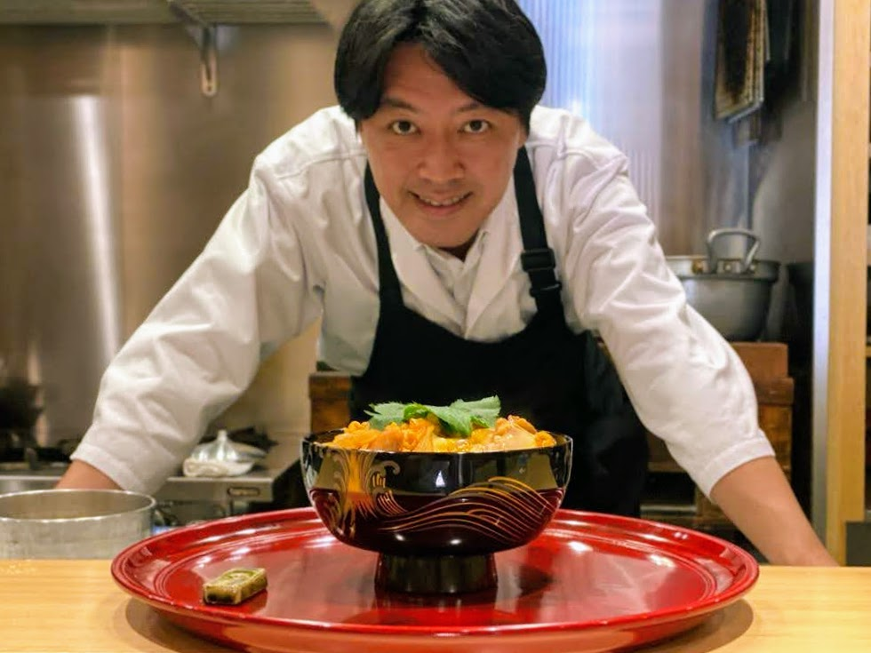

Our passion and mission
Do what you love, love what you do! We are passionate about sharing the art and tradition of Japanese cuisine. Our workshops and training programs are designed for anyone who wants to explore authentic Japanese cooking- from curious beginners to dedicated food enthusiasts.
With experienced instructors and a hands-on learning approach, we teach the techniques, ingredients, and cultural traditions that make Japanese food unique. From sushi and ramen to traditional home-style dishes, our goal is to make Japanese cooking approachable, inspiring, and enjoyable.
Join us to discover the flavors, skills, and philosophy behind one of the world’s most respected culinary traditions.